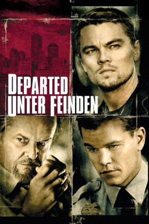

Auszeichnungen: 4 Oscars gewonnen für 1 Oscars nominiert 1 GoldenGlobes gewonnen
 gesehen am 02.08.2015
gesehen am 02.08.2015Alternativ: The Departed
Auszeichnungen: 4 Oscars gewonnen für 1 Oscars nominiert 1 GoldenGlobes gewonnen gesehen am 02.08.2015
 
 IMDB-Wertung: 8.5 / 10
IMDB-Wertung: 8.5 / 10  IMDB-TOP-Platzierung: 41
IMDB-TOP-Platzierung: 41  Metascore:
Metascore: 
Der brutale Bostoner Mafiaboss Frank Costello hat es geschafft, mit Colin Sullivan einen seiner treuesten Männer bei der städtischen Polizei einzuschleusen, um stets auf dem Laufenden über die geplanten Aktivitäten der Cops zu bleiben. Und weil die Taktik, den Gegner mit Hilfe eines Maulwurfs auszuspionieren, zwar alt aber effektiv ist, hatten auch Polizeichef Queenan und Sergeant Digman diese Idee. Ihr Undercover-Ermittler Billy Costigan hat sich schnell zu einem der engsten Vertrauten von Pate Costello hochgearbeitet. Als sowohl die Mafia als auch das Police-Department erfahren, dass sich ein Falschspieler in ihren Reihen befindet, ohne aber dessen Identität zu kennen, müssen Sullivan und Costigan alles daran setzen, dass der jeweils andere zuerst auffliegt, um somit ihre eigene Tarnung aufrecht erhalten zu können.
Jahr: 2006
Dauer: 151 Minuten
FSK: 16
Land: USA Studio: Warner Bros.Tonspuren: DD5.1 - ,
Untertitel:
Auflösung: 1080p (1920×800) Größe: 12595 MB
Regisseur:  Martin Scorsese
Martin Scorsese
Drehbuch: William Monahan, Alan Mak, Felix Chong
Soundtrack: Howard Shore
Darsteller:
 Leonardo DiCaprio als Billy
Leonardo DiCaprio als Billy Matt Damon als Colin Sullivan
Matt Damon als Colin Sullivan Jack Nicholson als Frank Costello
Jack Nicholson als Frank Costello Mark Wahlberg als Dignam
Mark Wahlberg als Dignam Martin Sheen als Queenan
Martin Sheen als Queenan Ray Winstone als Mr. French
Ray Winstone als Mr. French Vera Farmiga als Madolyn
Vera Farmiga als Madolyn Anthony Anderson als Trooper Brown
Anthony Anderson als Trooper Brown Alec Baldwin als Ellerby
Alec Baldwin als Ellerby Kevin Corrigan als Cousin Sean
Kevin Corrigan als Cousin Sean James Badge Dale als Trooper Barrigan
James Badge Dale als Trooper Barrigan David O'Hara als Fitzy
David O'Hara als Fitzy Mark Rolston als Delahunt
Mark Rolston als Delahunt Robert Wahlberg als Lazio - FBI
Robert Wahlberg als Lazio - FBI J.C. MacKenzie als Realtor
J.C. MacKenzie als Realtor Gurdeep Singh als Pakistani Proprietor
Gurdeep Singh als Pakistani Proprietor Armen Garo als Providence Gangster #1
Armen Garo als Providence Gangster #1 John Cenatiempo als Providence Gangster #2
John Cenatiempo als Providence Gangster #2 Billy Smith als Detective #1 Tailing Queenan
Billy Smith als Detective #1 Tailing Queenan Lyman Chen als Translator
Lyman Chen als Translator Brian Smyj als Man Glassed in Bar
Brian Smyj als Man Glassed in Bar Larry Mitchell als Younger Priest
Larry Mitchell als Younger Priest Mick O'Rourke als Jimmy Bags
Mick O'Rourke als Jimmy Bags John Rue als Luncheonette Proprietor
John Rue als Luncheonette Proprietor John Farrer als Priest at Billy's Funeral
John Farrer als Priest at Billy's Funeral Brian Haley als Detective #2 Tailing Queenan
Brian Haley als Detective #2 Tailing Queenan Terry Serpico als Detective #3 Tailing Queenan
Terry Serpico als Detective #3 Tailing Queenan Jay Giannone als Detective #4 Tailing Queenan
Jay Giannone als Detective #4 Tailing Queenan John Polce als Lynn Detective
John Polce als Lynn Detective David Conley als Gang Member with Mr. French
David Conley als Gang Member with Mr. French Tom Kemp als Billy Costigan, Sr. , credit only
Tom Kemp als Billy Costigan, Sr. , credit onlyDatei: X:\2006(A-F)\Departed - Unter Feinden (2006, FSK16, 1920x800).mkv seit 06.02.2015
Festplatte: HD 2005(G-Z)-2006(A-Z)
 Es gibt insgesamt 56 Filme in der Gruppe '2006(A-F)'
Es gibt insgesamt 56 Filme in der Gruppe '2006(A-F)'